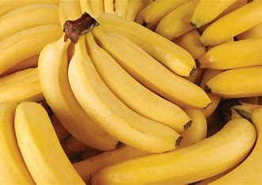

A banana is an elongated, edible fruit – botanically a berry[1] – produced by several kinds of large treelike herbaceous flowering plants in the genus Musa. In some countries, cooking bananas are called plantains, distinguishing them from dessert bananas. The fruit is variable in size, color and firmness, but is usually elongated and curved, with soft flesh rich in starch covered with a peel, which may have a variety of colors when ripe. It grows upward in clusters near the top of the plant. Almost all modern edible seedless (parthenocarp) cultivated bananas come from two wild species – Musa acuminata and Musa balbisiana, or hybrids of them. Musa species are native to tropical Indomalaya and Australia; they were probably domesticated in New Guinea. They are grown in 135 countries, primarily for their fruit, and to a lesser extent to make banana paper and textiles, while some are grown as ornamental plants. The world's largest producers of bananas in 2022 were India and China, which together accounted for approximately 26% of total production. Bananas are eaten raw or cooked in recipes varying from curries to banana chips, fritters, fruit preserves, or simply baked or steamed. Worldwide, there is no sharp distinction between dessert "bananas" and cooking "plantains": this works well enough in the Americas and Europe, but it breaks down in Southeast Asia where many more kinds of bananas are grown and eaten. The term "banana" is applied also to other members of the genus Musa, such as the scarlet banana (Musa coccinea), the pink banana (Musa velutina), and the Fe'i bananas. Members of the genus Ensete, such as the snow banana (Ensete glaucum) and the economically important false banana (Ensete ventricosum) of Africa are sometimes included. Both genera are in the banana family, Musaceae. Banana plantations are subject to damage by parasitic nematodes and insect pests, and to fungal and bacterial diseases, one of the most serious being Panama disease which is caused by a Fusarium fungus. This and black sigatoka threaten the production of Cavendish bananas, the main kind eaten in the Western world, which is a triploid Musa acuminata. Plant breeders are seeking new varieties, but these are difficult to breed given that commercial varieties are seedless. To enable future breeding, banana germplasm is conserved in multiple gene banks around the world.
The banana plant is the largest herbaceous flowering plant. All the above-ground parts of a banana plant grow from a structure called a corm. Plants are normally tall and fairly sturdy with a treelike appearance, but what appears to be a trunk is actually a pseudostem composed of multiple leaf-stalks (petioles). Bananas grow in a wide variety of soils, as long as it is at least 60 centimetres (2.0 ft) deep, has good drainage and is not compacted. They are fast-growing plants, with a growth rate of up to 1.6 metres (5.2 ft) per day. The leaves of banana plants are composed of a stalk (petiole) and a blade (lamina). The base of the petiole widens to form a sheath; the tightly packed sheaths make up the pseudostem, which is all that supports the plant. The edges of the sheath meet when it is first produced, making it tubular. As new growth occurs in the centre of the pseudostem, the edges are forced apart. Cultivated banana plants vary in height depending on the variety and growing conditions. Most are around 5 m (16 ft) tall, with a range from 'Dwarf Cavendish' plants at around 3 m (10 ft) to 'Gros Michel' at 7 m (23 ft) or more. Leaves are spirally arranged and may grow 2.7 metres (8.9 ft) long and 60 cm (2.0 ft) wide. When a banana plant is mature, the corm stops producing new leaves and begins to form a flower spike or inflorescence. A stem develops which grows up inside the pseudostem, carrying the immature inflorescence until eventually it emerges at the top. Each pseudostem normally produces a single inflorescence, also known as the "banana heart". After fruiting, the pseudostem dies, but offshoots will normally have developed from the base, so that the plant as a whole is perennial. The inflorescence contains many petal-like bracts between rows of flowers. The female flowers (which can develop into fruit) appear in rows further up the stem (closer to the leaves) from the rows of male flowers. The ovary is inferior, meaning that the tiny petals and other flower parts appear at the tip of the ovary. The banana fruits develop from the banana heart, in a large hanging cluster called a bunch, made up of around nine tiers called hands, with up to 20 fruits to a hand. A bunch can weigh 22–65 kilograms (49–143 lb). The stalk ends of the fruits connect up to the rachis part of the inflorescence. Opposite the stalk end, is the blossom end, where the remnants of the flower deviate the texture from the rest of the flesh inside the peel. The fruit has been described as a "leathery berry". There is a protective outer layer (a peel or skin) with numerous long, thin strings (Vascular bundles), which run lengthwise between the skin and the edible inner white flesh. The peel is less palatable and usually discarded after peeling the fruit, optimally done from the blossom end, but often started from the stalk end. The inner part of the common yellow dessert variety can be split lengthwise into three sections that correspond to the inner portions of the three carpels by manually deforming the unopened fruit. In cultivated varieties, fertile seeds are usually absent.[13][14]
The genus Musa was created by Carl Linnaeus in 1753. The name may be derived from Antonius Musa, physician to the Emperor Augustus, or Linnaeus may have adapted the Arabic word for banana, mauz. The ultimate origin of musa may be in the Trans–New Guinea languages, which have words similar to "#muku"; from there the name was borrowed into the Austronesian languages and across Asia, accompanying the cultivation of the banana as it was brought to new areas, via the Dravidian languages of India, into Arabic as a Wanderwort. The word "banana" is thought to be of West African origin, possibly from the Wolof word banaana, and passed into English via Spanish or Portuguese. Musa is the type genus in the family Musaceae. The APG III system assigns Musaceae to the order Zingiberales, part of the commelinid clade of the monocotyledonous flowering plants. Some 70 species of Musa were recognized by the World Checklist of Selected Plant Families as of January 2013; several produce edible fruit, while others are cultivated as ornamentals. The classification of cultivated bananas has long been a problematic issue for taxonomists. Linnaeus originally placed bananas into two species based only on their uses as food: Musa sapientum for dessert bananas and Musa paradisiaca for plantains. More species names were added, but this approach proved to be inadequate for the number of cultivars in the primary center of diversity of the genus, Southeast Asia. Many of these cultivars were given names that were later discovered to be synonyms. In a series of papers published from 1947 onward, Ernest Cheesman showed that Linnaeus's Musa sapientum and Musa paradisiaca were cultivars and descendants of two wild seed-producing species, Musa acuminata and Musa balbisiana, both first described by Luigi Aloysius Colla. Cheesman recommended the abolition of Linnaeus's species in favor of reclassifying bananas according to three morphologically distinct groups of cultivars – those primarily exhibiting the botanical characteristics of Musa balbisiana, those primarily exhibiting the botanical characteristics of Musa acuminata, and those with characteristics of both. Researchers Norman Simmonds and Ken Shepherd proposed a genome-based nomenclature system in 1955. This system eliminated almost all the difficulties and inconsistencies of the earlier classification of bananas based on assigning scientific names to cultivated varieties. Despite this, the original names are still recognized by some authorities, leading to confusion. The accepted scientific names for most groups of cultivated bananas are Musa acuminata Colla and Musa balbisiana Colla for the ancestral species, and Musa × paradisiaca L. for the hybrid of the two. An unusual feature of the genetics of the banana is that chloroplast DNA is inherited maternally, while mitochondrial DNA is inherited paternally. This facilitates taxonomic study of species and subspecies relationships.